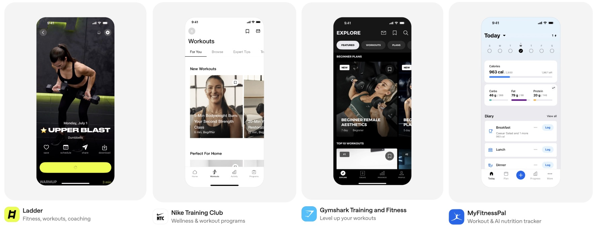
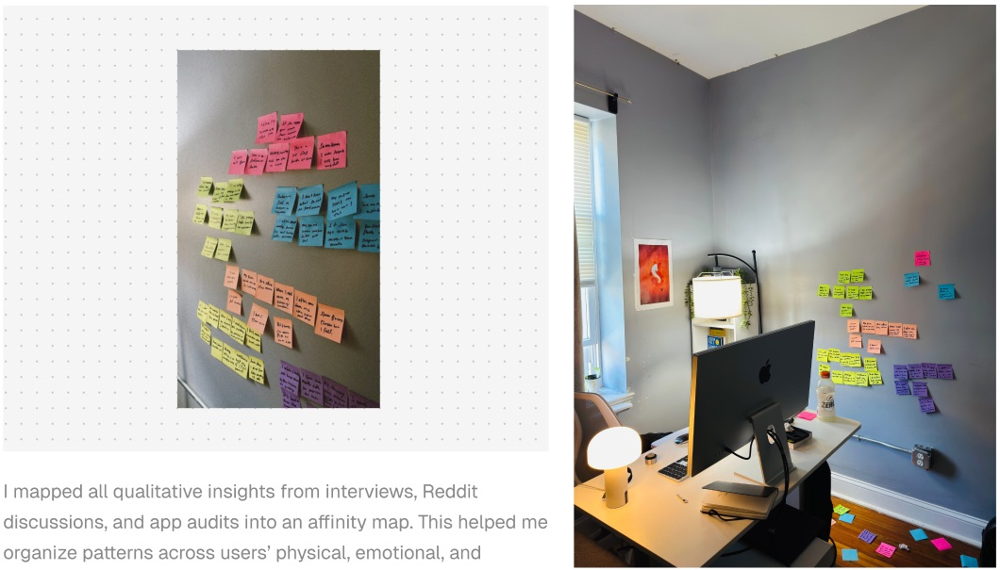
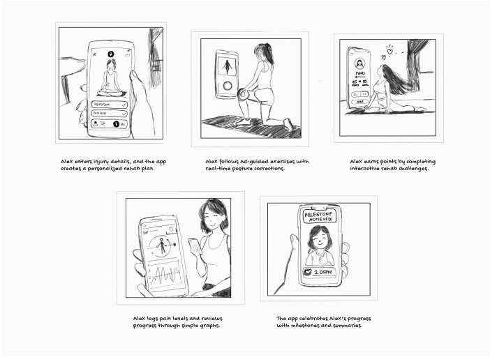
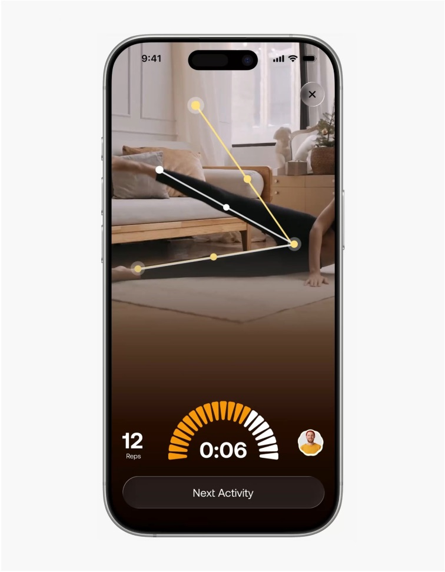
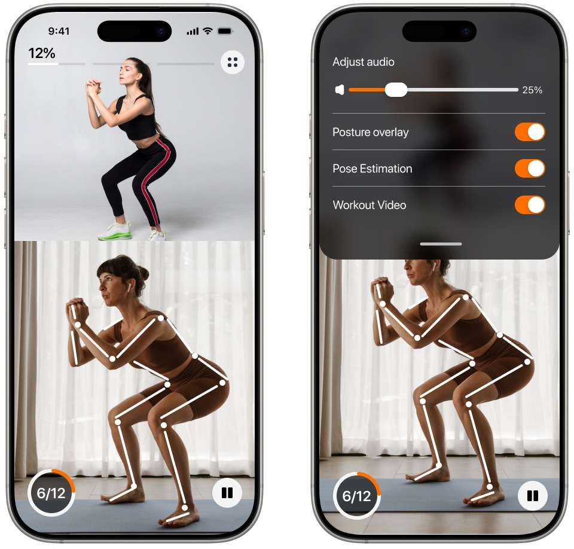
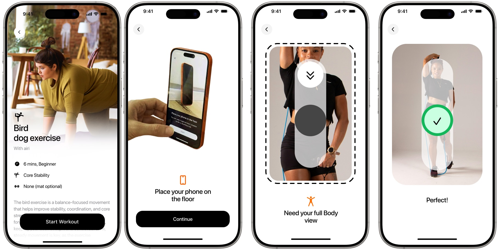
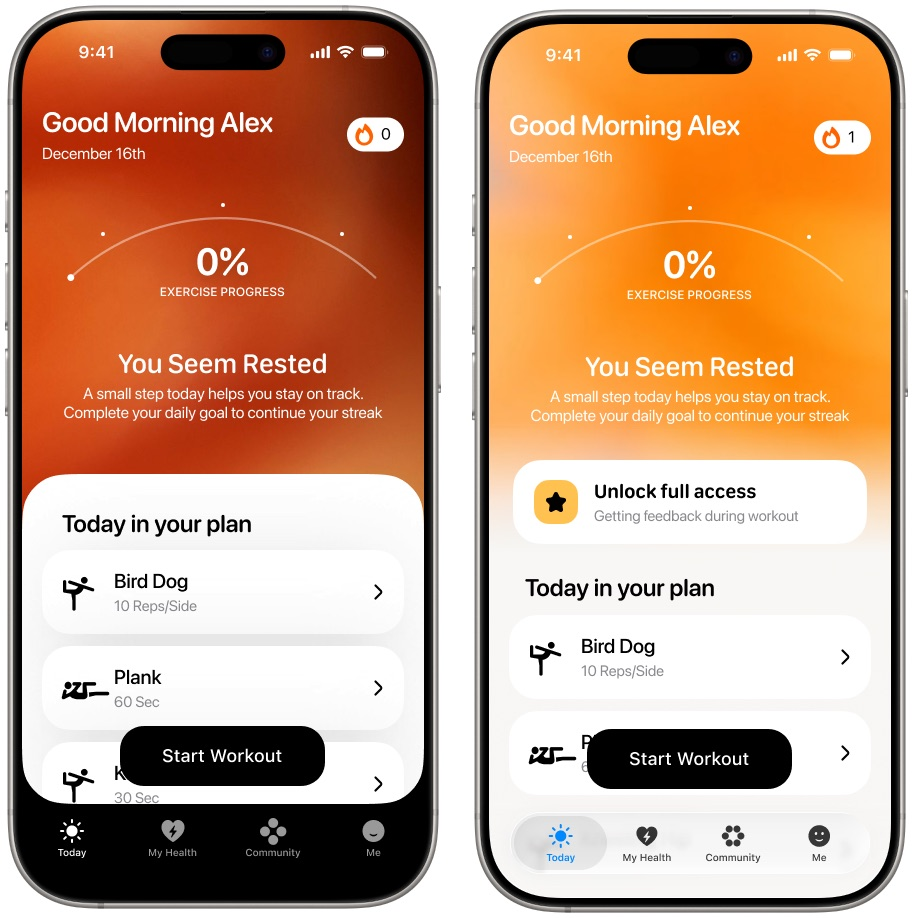
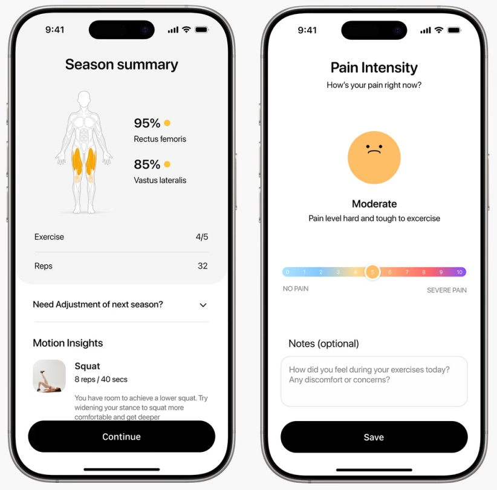
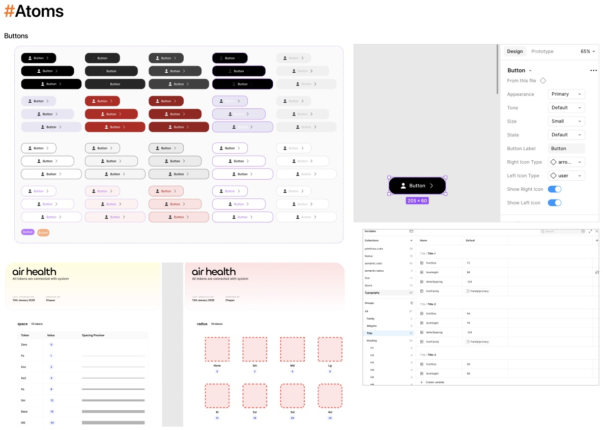

Computer vision & product design · 2026
An adaptive wellness platform that uses the phone camera to read how you move, coach your form in the middle of a rep, and adjust each day’s plan to how your body feels.
Fitness apps log what you did, but can’t tell you what today needs or whether your form is right.
Pose estimation on the phone camera, turned into feedback people can act on mid movement, plus a plan that adapts daily.
A shipped SwiftUI prototype, 60% faster design to test cycles, and accelerator funding for the startup.
How do you tell someone they’re doing it wrong, in the middle of a rep, in a way they can notice, trust and act on?
Air Health’s mission is to help anyone move with confidence and turn any space into a training space. For the business, that means a daily habit rather than a one time download, with retention that justifies a subscription.
The camera makes this possible: it can see how someone moves and respond in real time. The design challenge sits between the model and the person. A correct prediction is useless if it arrives at the wrong moment, in the wrong form, or feels like criticism.
I audited five leading apps: Ladder, Nike Training Club, Gymshark, MyFitnessPal and Peloton. They are good at workout libraries and tracking history. None of them offered live feedback on form, and none adapted the plan to how the person felt that day. In short, they tell you what you did, not what today needs.

I combined interviews, Reddit discussions and the app audit into an affinity map, organising patterns across people’s physical, emotional and behavioural recovery journeys. One pattern came up again and again: people push hard on a day they shouldn’t, feel worse, and then stop going entirely.

Objective: a clear and trustworthy daily plan that adapts to how your body feels, and coaches you while you move.
The core loop is simple: the camera captures movement, the system evaluates form, and the plan adapts. Underneath, it runs as a six stage pipeline built with the engineering team.
I started with storyboards of one person’s journey: setting up a plan around an injury, following guided exercises with live corrections, logging pain, and seeing progress.

From there, most of the design work went into one moment: the correction. I explored three ways to deliver it, each tested on a real phone with the real camera.
A skeleton drawn over the live camera view: white while tracking, yellow when a limb drifts from the target, and a pulse when a rep counts. It made the model’s view visible, but reading colour changes on a small screen mid movement is hard.

Chevrons were added to show which way to move, with the skeleton turning green when form is correct. This told people what to do, not just that something was wrong. It is shown in motion at the top of this page, along with a short spoken prompt.
The final direction splits the screen: a demonstration above and the person below, so they can watch the shape and match it. Spoken audio carries the correction, so people don’t have to read the screen at all. The skeleton overlay became optional, with controls for audio, posture overlay, pose estimation and the demo video.

Because everything depends on a clear view of the body, setup became its own flow: choose an exercise, place the phone on the floor, step back until the full body is in view, then a clear confirmation before the set begins.

I designed the home screen around one assumption: people open the app asking “what should I do today?”, not “what’s available?” So it leads with the person’s state, then a plan, then one action.
“You seem rested,” based on recent sessions and check ins. A later version sums this up as a daily readiness score.
Three named exercises chosen for today.
A single Start Workout button.

After each session, a summary shows the muscles worked, reps completed and motion insights, such as room to squat lower with a wider stance. A quick pain check in on a 0 to 10 scale lets the plan respond to how the body actually feels.

Feedback timing couldn’t be faked in a clickable prototype. A correction that arrives half a second late feels wrong, and only a real camera, real motion and a real phone in hand reveal that. So I built the prototype in SwiftUI and tested it on device, which cut the time from design to a tested interaction by 60%.
I ran moderated usability sessions of 45 to 60 minutes, with informed consent for recording. Each session followed the full journey: onboarding, positioning the camera, feedback during movement, feedback after the exercise, and the community feed. I mapped each participant’s emotional journey across these phases to find where confidence dropped.
The sessions pointed to a practical constraint that shaped the final design: during a rep, people can’t reliably look at a phone on the floor. That is why audio came to carry the correction, and the visual overlay became optional.
I also built the design system from scratch, with components and variables tied to tokens for colour, spacing, radius and type, so the engineering team could build consistently as the product grew.

The accuracy of the model was never the whole story. The hardest problems were human: when to interrupt, how to phrase a correction so it helps rather than discourages, and how much of the model’s view to show. Moving the correction from the screen to the voice was a small interface change that reflected a big shift in thinking, from showing what the system sees to supporting what the person is doing.
That is the question I want to keep exploring: how can computer vision systems coach people in the moment, in ways that build confidence rather than dependence?